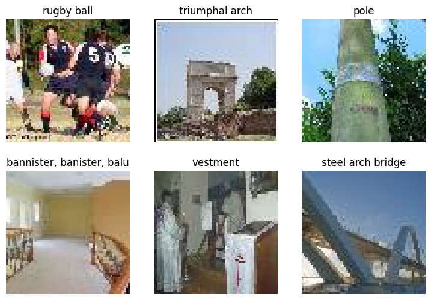
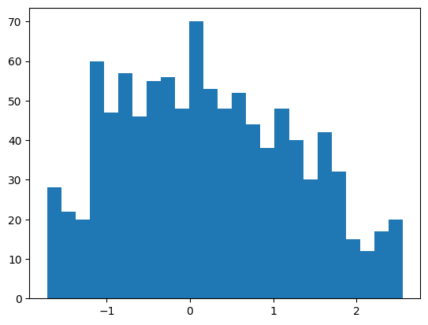
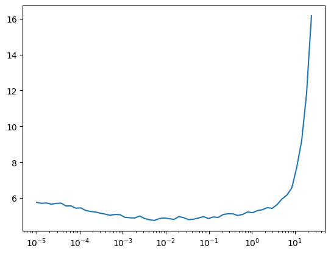
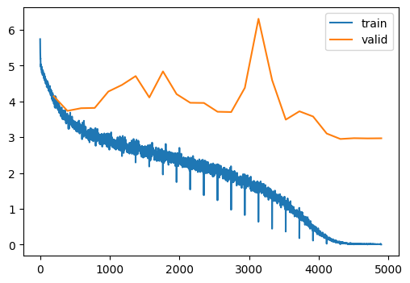
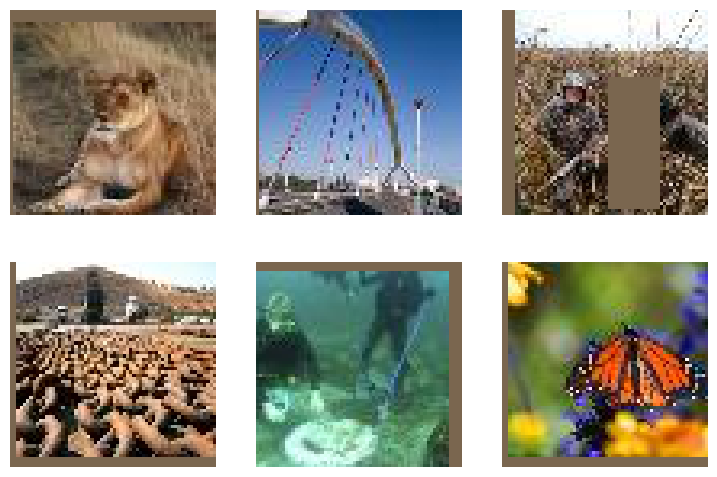
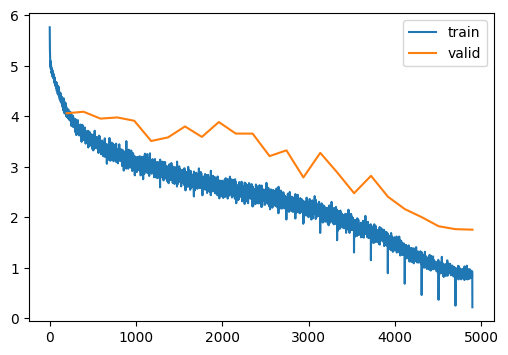
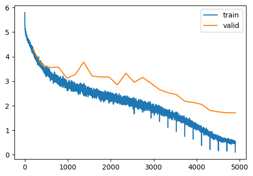
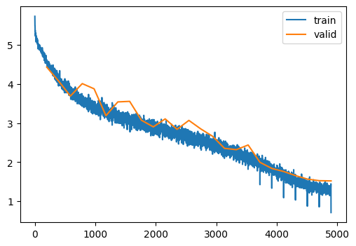

# Download, if needed
tiny_imagenet();Tiny Imagenet (Part I)
Scaling up the dataset and training a UNet model
Adapted from
tiny_imagenet
tiny_imagenet (dir_=Path('../tiny-imagenet-200'))
TinyImageNetDatasetGenerator
TinyImageNetDatasetGenerator (base_dir=None)
Generate Tiny Imagenet rows lazily from zip file
upload = False
if upload:
dg = TinyImageNetDatasetGenerator()
splits = {}
for split, split_gen in [("train", dg.gen_train), ("test", dg.gen_test)]:
# Ensure at least one record
next(iter(split_gen()))
ds = Dataset.from_generator(split_gen)
ds = ds.cast_column("image", DatasetsImage())
splits[split] = ds
dsd = DatasetDict(splits)
dsd.push_to_hub("jeremyf/tiny-imagent-200")tiny_imagenet_dataset_dict
tiny_imagenet_dataset_dict ()
Huggingface dataset from the HF hub
to_rgb
to_rgb (img)
norm
norm (x)
denorm
denorm (x)
preprocess_factory
preprocess_factory (pipe_)
get_imagenet_dls
get_imagenet_dls (bs=512, with_word=False, training_preprocessor=[<function to_rgb at 0x7f2095257640>, PILToTensor(), ConvertImageDtype(), <function norm at 0x7f2095257760>])
dls = get_imagenet_dls(with_word=True)Downloading readme: 100%|██████████████████████| 453/453 [00:00<00:00, 1.30MB/s]
Downloading data files: 0%| | 0/2 [00:00<?, ?it/s]
Downloading data: 0%| | 0.00/158M [00:00<?, ?B/s]
Downloading data: 3%|▌ | 4.19M/158M [00:03<01:57, 1.31MB/s]
Downloading data: 8%|█▋ | 12.6M/158M [00:06<01:06, 2.19MB/s]
Downloading data: 13%|██▊ | 21.0M/158M [00:09<00:56, 2.43MB/s]
Downloading data: 19%|███▉ | 29.4M/158M [00:13<00:55, 2.32MB/s]
Downloading data: 24%|█████ | 37.7M/158M [00:16<00:50, 2.39MB/s]
Downloading data: 29%|██████▏ | 46.1M/158M [00:19<00:45, 2.43MB/s]
Downloading data: 35%|███████▎ | 54.5M/158M [00:21<00:37, 2.77MB/s]
Downloading data: 40%|████████▍ | 62.9M/158M [00:24<00:30, 3.07MB/s]
Downloading data: 45%|█████████▌ | 71.3M/158M [00:27<00:30, 2.82MB/s]
Downloading data: 51%|██████████▋ | 79.7M/158M [00:31<00:30, 2.57MB/s]
Downloading data: 56%|███████████▋ | 88.1M/158M [00:34<00:25, 2.72MB/s]
Downloading data: 61%|████████████▊ | 96.5M/158M [00:36<00:21, 2.83MB/s]
Downloading data: 67%|██████████████▋ | 105M/158M [00:39<00:17, 3.04MB/s]
Downloading data: 72%|███████████████▊ | 113M/158M [00:42<00:14, 2.97MB/s]
Downloading data: 77%|████████████████▉ | 122M/158M [00:45<00:12, 2.90MB/s]
Downloading data: 83%|██████████████████▏ | 130M/158M [00:47<00:09, 2.93MB/s]
Downloading data: 88%|███████████████████▎ | 138M/158M [00:51<00:06, 2.83MB/s]
Downloading data: 93%|████████████████████▌ | 147M/158M [00:56<00:04, 2.18MB/s]
Downloading data: 100%|██████████████████████| 158M/158M [00:59<00:00, 2.65MB/s]
Downloading data files: 50%|██████████▌ | 1/2 [00:59<00:59, 59.44s/it]
Downloading data: 0%| | 0.00/15.8M [00:00<?, ?B/s]
Downloading data: 26%|█████▎ | 4.19M/15.8M [00:02<00:07, 1.46MB/s]
Downloading data: 100%|████████████████████| 15.8M/15.8M [00:05<00:00, 2.97MB/s]
Downloading data files: 100%|█████████████████████| 2/2 [01:04<00:00, 32.39s/it]
Extracting data files: 100%|█████████████████████| 2/2 [00:00<00:00, 614.82it/s]
Generating train split: 100%|█| 100000/100000 [00:00<00:00, 233408.11 examples/s
Generating test split: 100%|███| 10000/10000 [00:00<00:00, 665783.68 examples/s]
Map: 100%|████████████████████████| 10000/10000 [00:10<00:00, 913.89 examples/s]CPU times: user 12.4 s, sys: 2.92 s, total: 15.3 s
Wall time: 1min 20sviz
viz (dls)
viz(dls)
xb, _, words = dls.peek()
pixels = xb.reshape(-1)
pixels = pixels[torch.randperm(len(pixels))]
plt.hist(pixels[:1000], bins=25);
xb.min(), xb.max()(tensor(-1.7143), tensor(2.5556))Let’s implement the model with color and a slightly fancier final pooling layer.
nn.AdaptiveAvgPool2d?Init signature: nn.AdaptiveAvgPool2d( output_size: Union[int, NoneType, Tuple[Optional[int], ...]], ) -> None Docstring: Applies a 2D adaptive average pooling over an input signal composed of several input planes. The output is of size H x W, for any input size. The number of output features is equal to the number of input planes. Args: output_size: the target output size of the image of the form H x W. Can be a tuple (H, W) or a single H for a square image H x H. H and W can be either a ``int``, or ``None`` which means the size will be the same as that of the input. Shape: - Input: :math:`(N, C, H_{in}, W_{in})` or :math:`(C, H_{in}, W_{in})`. - Output: :math:`(N, C, S_{0}, S_{1})` or :math:`(C, S_{0}, S_{1})`, where :math:`S=\text{output\_size}`. Examples: >>> # target output size of 5x7 >>> m = nn.AdaptiveAvgPool2d((5, 7)) >>> input = torch.randn(1, 64, 8, 9) >>> output = m(input) >>> # target output size of 7x7 (square) >>> m = nn.AdaptiveAvgPool2d(7) >>> input = torch.randn(1, 64, 10, 9) >>> output = m(input) >>> # target output size of 10x7 >>> m = nn.AdaptiveAvgPool2d((None, 7)) >>> input = torch.randn(1, 64, 10, 9) >>> output = m(input) Init docstring: Initializes internal Module state, shared by both nn.Module and ScriptModule. File: ~/micromamba/envs/slowai/lib/python3.11/site-packages/torch/nn/modules/pooling.py Type: type Subclasses:
class TinyImageResNet1(nn.Module):
def __init__(
self,
nfs,
n_outputs=10,
p_drop=0.1,
):
super().__init__()
self.nfs = nfs
self.n_outputs = n_outputs
self.layers = nn.Sequential(*self.get_layers(nfs, n_outputs))
self.pool = nn.Sequential(
nn.AdaptiveAvgPool2d(output_size=1),
nn.Flatten(),
)
self.drop = nn.Dropout(p_drop)
self.lin = nn.Linear(nfs[-1], n_outputs, bias=False)
self.norm = nn.BatchNorm1d(n_outputs)
def get_layers(self, nfs, n_outputs=10):
layers = [Conv(3, nfs[0], ks=5, stride=1)]
for c_in, c_out in zip(nfs, nfs[1:]):
block = ResidualConvBlock(c_in, c_out)
layers.append(block)
return layers
def forward(self, x):
x = self.layers(x)
x = self.pool(x)
x = self.drop(x)
x = self.lin(x)
x = self.norm(x)
return x
@classmethod
def kaiming(cls, *args, **kwargs):
model = cls(*args, **kwargs)
model.apply(init_leaky_weights)
return modeldls = get_imagenet_dls(bs=512) # We don't want the human-readable labelsmodel = TinyImageResNet1.kaiming(
n_outputs=200,
nfs=[32, 64, 128, 256, 512, 1024],
)
summarize(model, [*model.layers, model.lin, model.norm], get_imagenet_dls())| Type | Input | Output | N. params | MFlops |
|---|---|---|---|---|
| Conv | (512, 3, 64, 64) | (512, 32, 64, 64) | 2,464 | 9.8 |
| ResidualConvBlock | (512, 32, 64, 64) | (512, 64, 32, 32) | 57,664 | 58.7 |
| ResidualConvBlock | (512, 64, 32, 32) | (512, 128, 16, 16) | 230,016 | 58.7 |
| ResidualConvBlock | (512, 128, 16, 16) | (512, 256, 8, 8) | 918,784 | 58.7 |
| ResidualConvBlock | (512, 256, 8, 8) | (512, 512, 4, 4) | 3,672,576 | 58.7 |
| ResidualConvBlock | (512, 512, 4, 4) | (512, 1024, 2, 2) | 14,685,184 | 58.7 |
| Linear | (512, 1024) | (512, 200) | 204,800 | 0.2 |
| BatchNorm1d | (512, 200) | (512, 200) | 400 | 0.0 |
| Total | 19,771,888 | 303.646864 |
lr_find
lr_find (model, dls, start_lr, gamma=1.3, n_epochs=2, extra_cbs=(), loss_fn=<function cross_entropy>)
lr_find(model, dls, start_lr=1e-5)
0.00% [0/2 00:00<?]
28.57% [56/196 00:08<00:21 11.806]

train
train (model, dls, lr=0.01, n_epochs=2, extra_cbs=())
model = TinyImageResNet1.kaiming(
n_outputs=200,
nfs=[32, 64, 128, 256, 512, 1024],
)
train(model, dls, lr=0.1, n_epochs=25)| MulticlassAccuracy | loss | epoch | train |
|---|---|---|---|
| 0.081 | 4.524 | 0 | train |
| 0.119 | 4.143 | 0 | eval |
| 0.180 | 3.747 | 1 | train |
| 0.182 | 3.735 | 1 | eval |
| 0.242 | 3.359 | 2 | train |
| 0.193 | 3.809 | 2 | eval |
| 0.284 | 3.119 | 3 | train |
| 0.189 | 3.818 | 3 | eval |
| 0.312 | 2.964 | 4 | train |
| 0.178 | 4.275 | 4 | eval |
| 0.334 | 2.843 | 5 | train |
| 0.159 | 4.461 | 5 | eval |
| 0.357 | 2.724 | 6 | train |
| 0.137 | 4.707 | 6 | eval |
| 0.374 | 2.626 | 7 | train |
| 0.179 | 4.110 | 7 | eval |
| 0.397 | 2.514 | 8 | train |
| 0.124 | 4.837 | 8 | eval |
| 0.417 | 2.420 | 9 | train |
| 0.199 | 4.202 | 9 | eval |
| 0.437 | 2.314 | 10 | train |
| 0.191 | 3.961 | 10 | eval |
| 0.458 | 2.207 | 11 | train |
| 0.215 | 3.956 | 11 | eval |
| 0.478 | 2.110 | 12 | train |
| 0.237 | 3.711 | 12 | eval |
| 0.505 | 1.986 | 13 | train |
| 0.251 | 3.702 | 13 | eval |
| 0.537 | 1.833 | 14 | train |
| 0.241 | 4.379 | 14 | eval |
| 0.569 | 1.680 | 15 | train |
| 0.172 | 6.307 | 15 | eval |
| 0.607 | 1.497 | 16 | train |
| 0.208 | 4.592 | 16 | eval |
| 0.664 | 1.261 | 17 | train |
| 0.310 | 3.490 | 17 | eval |
| 0.733 | 0.972 | 18 | train |
| 0.312 | 3.723 | 18 | eval |
| 0.819 | 0.654 | 19 | train |
| 0.338 | 3.578 | 19 | eval |
| 0.914 | 0.325 | 20 | train |
| 0.398 | 3.102 | 20 | eval |
| 0.976 | 0.113 | 21 | train |
| 0.437 | 2.950 | 21 | eval |
| 0.997 | 0.033 | 22 | train |
| 0.441 | 2.972 | 22 | eval |
| 0.999 | 0.015 | 23 | train |
| 0.440 | 2.966 | 23 | eval |
| 1.000 | 0.012 | 24 | train |
| 0.441 | 2.969 | 24 | eval |

That’s clearly overfitting. Let’s add some minor augmentation.
T.RandomErasing?Init signature: T.RandomErasing( p=0.5, scale=(0.02, 0.33), ratio=(0.3, 3.3), value=0, inplace=False, ) Docstring: Randomly selects a rectangle region in a torch.Tensor image and erases its pixels. This transform does not support PIL Image. 'Random Erasing Data Augmentation' by Zhong et al. See https://arxiv.org/abs/1708.04896 Args: p: probability that the random erasing operation will be performed. scale: range of proportion of erased area against input image. ratio: range of aspect ratio of erased area. value: erasing value. Default is 0. If a single int, it is used to erase all pixels. If a tuple of length 3, it is used to erase R, G, B channels respectively. If a str of 'random', erasing each pixel with random values. inplace: boolean to make this transform inplace. Default set to False. Returns: Erased Image. Example: >>> transform = transforms.Compose([ >>> transforms.RandomHorizontalFlip(), >>> transforms.PILToTensor(), >>> transforms.ConvertImageDtype(torch.float), >>> transforms.Normalize((0.485, 0.456, 0.406), (0.229, 0.224, 0.225)), >>> transforms.RandomErasing(), >>> ]) Init docstring: Initializes internal Module state, shared by both nn.Module and ScriptModule. File: ~/micromamba/envs/slowai/lib/python3.11/site-packages/torchvision/transforms/transforms.py Type: type Subclasses:
dls = get_imagenet_dls(bs=512, training_preprocessor=preprocess_and_augment)
viz(dls)
model = TinyImageResNet1.kaiming(
n_outputs=200,
nfs=[32, 64, 128, 256, 512, 1024],
)
train(model, dls, lr=0.1, n_epochs=25)| MulticlassAccuracy | loss | epoch | train |
|---|---|---|---|
| 0.078 | 4.541 | 0 | train |
| 0.129 | 4.056 | 0 | eval |
| 0.166 | 3.847 | 1 | train |
| 0.154 | 4.086 | 1 | eval |
| 0.210 | 3.532 | 2 | train |
| 0.179 | 3.950 | 2 | eval |
| 0.247 | 3.317 | 3 | train |
| 0.174 | 3.973 | 3 | eval |
| 0.271 | 3.178 | 4 | train |
| 0.186 | 3.907 | 4 | eval |
| 0.297 | 3.037 | 5 | train |
| 0.227 | 3.507 | 5 | eval |
| 0.313 | 2.945 | 6 | train |
| 0.221 | 3.579 | 6 | eval |
| 0.330 | 2.852 | 7 | train |
| 0.190 | 3.795 | 7 | eval |
| 0.351 | 2.744 | 8 | train |
| 0.214 | 3.588 | 8 | eval |
| 0.367 | 2.667 | 9 | train |
| 0.185 | 3.882 | 9 | eval |
| 0.383 | 2.590 | 10 | train |
| 0.232 | 3.654 | 10 | eval |
| 0.399 | 2.511 | 11 | train |
| 0.218 | 3.653 | 11 | eval |
| 0.416 | 2.423 | 12 | train |
| 0.286 | 3.208 | 12 | eval |
| 0.434 | 2.345 | 13 | train |
| 0.295 | 3.322 | 13 | eval |
| 0.453 | 2.251 | 14 | train |
| 0.368 | 2.786 | 14 | eval |
| 0.471 | 2.153 | 15 | train |
| 0.301 | 3.272 | 15 | eval |
| 0.498 | 2.039 | 16 | train |
| 0.360 | 2.885 | 16 | eval |
| 0.522 | 1.912 | 17 | train |
| 0.431 | 2.474 | 17 | eval |
| 0.556 | 1.765 | 18 | train |
| 0.403 | 2.818 | 18 | eval |
| 0.588 | 1.615 | 19 | train |
| 0.456 | 2.405 | 19 | eval |
| 0.628 | 1.436 | 20 | train |
| 0.503 | 2.159 | 20 | eval |
| 0.672 | 1.253 | 21 | train |
| 0.537 | 2.000 | 21 | eval |
| 0.713 | 1.091 | 22 | train |
| 0.575 | 1.820 | 22 | eval |
| 0.745 | 0.961 | 23 | train |
| 0.592 | 1.762 | 23 | eval |
| 0.768 | 0.881 | 24 | train |
| 0.593 | 1.752 | 24 | eval |

It does seem that augmentation is critical for performance. Compare 58.6% accuracy (mine) vs 59.3% accuracy (Howard).
How much better can we do?
Going deeper
To answer this, we can check Papers With Code. The best approach documented there is the ResNext paper at 72% accurate. This benchmark has shifted since the original course publication date, but here is the paper Jeremy refers to.
So, how much work is involved in going from 60% accurate to 70% accurate? “Real resnets” have multiple ResBlocks at the same feature map resolution.
n_blocks = (3, 2, 2, 1, 1)This specification has five downsampling layers but nine ResBlocks
StackableResidualConvBlock
StackableResidualConvBlock (n_blocks, c_in, c_out, conv_cls=<class 'slowai.resnets.ResidualConvBlock'>)
*A sequential container.
Modules will be added to it in the order they are passed in the constructor. Alternatively, an OrderedDict of modules can be passed in. The forward() method of Sequential accepts any input and forwards it to the first module it contains. It then “chains” outputs to inputs sequentially for each subsequent module, finally returning the output of the last module.
The value a Sequential provides over manually calling a sequence of modules is that it allows treating the whole container as a single module, such that performing a transformation on the Sequential applies to each of the modules it stores (which are each a registered submodule of the Sequential).
What’s the difference between a Sequential and a :class:torch.nn.ModuleList? A ModuleList is exactly what it sounds like–a list for storing Module s! On the other hand, the layers in a Sequential are connected in a cascading way.
Example::
# Using Sequential to create a small model. When `model` is run,
# input will first be passed to `Conv2d(1,20,5)`. The output of
# `Conv2d(1,20,5)` will be used as the input to the first
# `ReLU`; the output of the first `ReLU` will become the input
# for `Conv2d(20,64,5)`. Finally, the output of
# `Conv2d(20,64,5)` will be used as input to the second `ReLU`
model = nn.Sequential(
nn.Conv2d(1,20,5),
nn.ReLU(),
nn.Conv2d(20,64,5),
nn.ReLU()
)
# Using Sequential with OrderedDict. This is functionally the
# same as the above code
model = nn.Sequential(OrderedDict([
('conv1', nn.Conv2d(1,20,5)),
('relu1', nn.ReLU()),
('conv2', nn.Conv2d(20,64,5)),
('relu2', nn.ReLU())
]))*This was a tricky module to implement. Make sure that the channel, height and width dimensions are apropriate for all values of n_blocks.
class TinyImageResNet2(TinyImageResNet1):
def __init__(
self,
nfs,
n_blocks,
n_outputs=10,
p_drop=0.1,
):
self.n_blocks = n_blocks
super().__init__(nfs, n_outputs, p_drop)
def get_layers(self, nfs, n_outputs=10):
layers = [Conv(3, nfs[0], stride=1, ks=5)]
for c_in, c_out, n_blocks in zip(nfs, nfs[1:], self.n_blocks):
layers.append(StackableResidualConvBlock(n_blocks, c_in, c_out))
return layersmodel = TinyImageResNet2.kaiming(
n_outputs=200,
nfs=[32, 64, 128, 256, 512, 1024],
n_blocks=n_blocks,
)
summarize(model, [*model.layers, model.lin, model.norm], dls)| Type | Input | Output | N. params | MFlops |
|---|---|---|---|---|
| Conv | (512, 3, 64, 64) | (512, 32, 64, 64) | 2,464 | 9.8 |
| StackableResidualConvBlock | (512, 32, 64, 64) | (512, 64, 32, 32) | 213,952 | 218.1 |
| StackableResidualConvBlock | (512, 64, 32, 32) | (512, 128, 16, 16) | 541,952 | 138.4 |
| StackableResidualConvBlock | (512, 128, 16, 16) | (512, 256, 8, 8) | 2,165,248 | 138.4 |
| StackableResidualConvBlock | (512, 256, 8, 8) | (512, 512, 4, 4) | 3,672,576 | 58.7 |
| StackableResidualConvBlock | (512, 512, 4, 4) | (512, 1024, 2, 2) | 14,685,184 | 58.7 |
| Linear | (512, 1024) | (512, 200) | 204,800 | 0.2 |
| BatchNorm1d | (512, 200) | (512, 200) | 400 | 0.0 |
| Total | 21,486,576 | 622.416528 |
train(model, dls, lr=0.1, n_epochs=25)| MulticlassAccuracy | loss | epoch | train |
|---|---|---|---|
| 0.068 | 4.621 | 0 | train |
| 0.101 | 4.285 | 0 | eval |
| 0.160 | 3.876 | 1 | train |
| 0.187 | 3.676 | 1 | eval |
| 0.226 | 3.429 | 2 | train |
| 0.221 | 3.561 | 2 | eval |
| 0.277 | 3.138 | 3 | train |
| 0.222 | 3.567 | 3 | eval |
| 0.312 | 2.952 | 4 | train |
| 0.283 | 3.124 | 4 | eval |
| 0.339 | 2.806 | 5 | train |
| 0.269 | 3.274 | 5 | eval |
| 0.360 | 2.696 | 6 | train |
| 0.225 | 3.778 | 6 | eval |
| 0.383 | 2.586 | 7 | train |
| 0.290 | 3.208 | 7 | eval |
| 0.400 | 2.494 | 8 | train |
| 0.293 | 3.169 | 8 | eval |
| 0.419 | 2.405 | 9 | train |
| 0.324 | 3.169 | 9 | eval |
| 0.437 | 2.322 | 10 | train |
| 0.356 | 2.849 | 10 | eval |
| 0.454 | 2.236 | 11 | train |
| 0.291 | 3.322 | 11 | eval |
| 0.471 | 2.162 | 12 | train |
| 0.352 | 2.957 | 12 | eval |
| 0.490 | 2.068 | 13 | train |
| 0.326 | 3.154 | 13 | eval |
| 0.510 | 1.976 | 14 | train |
| 0.352 | 2.911 | 14 | eval |
| 0.534 | 1.864 | 15 | train |
| 0.390 | 2.655 | 15 | eval |
| 0.560 | 1.743 | 16 | train |
| 0.442 | 2.527 | 16 | eval |
| 0.589 | 1.611 | 17 | train |
| 0.455 | 2.454 | 17 | eval |
| 0.620 | 1.470 | 18 | train |
| 0.498 | 2.181 | 18 | eval |
| 0.658 | 1.306 | 19 | train |
| 0.514 | 2.130 | 19 | eval |
| 0.704 | 1.113 | 20 | train |
| 0.529 | 2.054 | 20 | eval |
| 0.751 | 0.924 | 21 | train |
| 0.583 | 1.807 | 21 | eval |
| 0.803 | 0.734 | 22 | train |
| 0.599 | 1.746 | 22 | eval |
| 0.838 | 0.607 | 23 | train |
| 0.613 | 1.712 | 23 | eval |
| 0.860 | 0.533 | 24 | train |
| 0.614 | 1.706 | 24 | eval |

Yet more augmentation
T.TrivialAugmentWide?Init signature: T.TrivialAugmentWide( num_magnitude_bins: int = 31, interpolation: torchvision.transforms.functional.InterpolationMode = <InterpolationMode.NEAREST: 'nearest'>, fill: Optional[List[float]] = None, ) -> None Docstring: Dataset-independent data-augmentation with TrivialAugment Wide, as described in `"TrivialAugment: Tuning-free Yet State-of-the-Art Data Augmentation" <https://arxiv.org/abs/2103.10158>`_. If the image is torch Tensor, it should be of type torch.uint8, and it is expected to have [..., 1 or 3, H, W] shape, where ... means an arbitrary number of leading dimensions. If img is PIL Image, it is expected to be in mode "L" or "RGB". Args: num_magnitude_bins (int): The number of different magnitude values. interpolation (InterpolationMode): Desired interpolation enum defined by :class:`torchvision.transforms.InterpolationMode`. Default is ``InterpolationMode.NEAREST``. If input is Tensor, only ``InterpolationMode.NEAREST``, ``InterpolationMode.BILINEAR`` are supported. fill (sequence or number, optional): Pixel fill value for the area outside the transformed image. If given a number, the value is used for all bands respectively. Init docstring: Initializes internal Module state, shared by both nn.Module and ScriptModule. File: ~/micromamba/envs/slowai/lib/python3.11/site-packages/torchvision/transforms/autoaugment.py Type: type Subclasses:
dls = get_imagenet_dls(bs=512, training_preprocessor=preprocess_and_trivial_augment)
viz(dls)
model = TinyImageResNet2.kaiming(
n_outputs=200,
nfs=[32, 64, 128, 256, 512, 1024],
n_blocks=n_blocks,
)
summarize(model, [*model.layers, model.lin, model.norm], dls)| Type | Input | Output | N. params | MFlops |
|---|---|---|---|---|
| Conv | (512, 3, 64, 64) | (512, 32, 64, 64) | 2,464 | 9.8 |
| StackableResidualConvBlock | (512, 32, 64, 64) | (512, 64, 32, 32) | 213,952 | 218.1 |
| StackableResidualConvBlock | (512, 64, 32, 32) | (512, 128, 16, 16) | 541,952 | 138.4 |
| StackableResidualConvBlock | (512, 128, 16, 16) | (512, 256, 8, 8) | 2,165,248 | 138.4 |
| StackableResidualConvBlock | (512, 256, 8, 8) | (512, 512, 4, 4) | 3,672,576 | 58.7 |
| StackableResidualConvBlock | (512, 512, 4, 4) | (512, 1024, 2, 2) | 14,685,184 | 58.7 |
| Linear | (512, 1024) | (512, 200) | 204,800 | 0.2 |
| BatchNorm1d | (512, 200) | (512, 200) | 400 | 0.0 |
| Total | 21,486,576 | 622.416528 |
train(model, dls, lr=0.1, n_epochs=25)| MulticlassAccuracy | loss | epoch | train |
|---|---|---|---|
| 0.040 | 4.902 | 0 | train |
| 0.075 | 4.431 | 0 | eval |
| 0.097 | 4.338 | 1 | train |
| 0.136 | 4.074 | 1 | eval |
| 0.147 | 3.954 | 2 | train |
| 0.180 | 3.691 | 2 | eval |
| 0.189 | 3.684 | 3 | train |
| 0.161 | 4.008 | 3 | eval |
| 0.223 | 3.488 | 4 | train |
| 0.193 | 3.875 | 4 | eval |
| 0.244 | 3.360 | 5 | train |
| 0.270 | 3.188 | 5 | eval |
| 0.266 | 3.237 | 6 | train |
| 0.256 | 3.541 | 6 | eval |
| 0.285 | 3.128 | 7 | train |
| 0.242 | 3.555 | 7 | eval |
| 0.305 | 3.023 | 8 | train |
| 0.302 | 3.071 | 8 | eval |
| 0.323 | 2.937 | 9 | train |
| 0.322 | 2.903 | 9 | eval |
| 0.338 | 2.860 | 10 | train |
| 0.300 | 3.106 | 10 | eval |
| 0.355 | 2.770 | 11 | train |
| 0.340 | 2.840 | 11 | eval |
| 0.369 | 2.690 | 12 | train |
| 0.320 | 3.068 | 12 | eval |
| 0.388 | 2.598 | 13 | train |
| 0.358 | 2.851 | 13 | eval |
| 0.404 | 2.512 | 14 | train |
| 0.377 | 2.662 | 14 | eval |
| 0.428 | 2.402 | 15 | train |
| 0.442 | 2.354 | 15 | eval |
| 0.450 | 2.293 | 16 | train |
| 0.451 | 2.319 | 16 | eval |
| 0.473 | 2.178 | 17 | train |
| 0.433 | 2.439 | 17 | eval |
| 0.501 | 2.047 | 18 | train |
| 0.521 | 1.995 | 18 | eval |
| 0.532 | 1.894 | 19 | train |
| 0.555 | 1.840 | 19 | eval |
| 0.566 | 1.747 | 20 | train |
| 0.570 | 1.761 | 20 | eval |
| 0.600 | 1.602 | 21 | train |
| 0.598 | 1.657 | 21 | eval |
| 0.630 | 1.464 | 22 | train |
| 0.617 | 1.567 | 22 | eval |
| 0.656 | 1.358 | 23 | train |
| 0.627 | 1.526 | 23 | eval |
| 0.669 | 1.307 | 24 | train |
| 0.629 | 1.521 | 24 | eval |

torch.save(model, "../models/tiny_imagenet_200_classifier.pt")Continued in part 2…